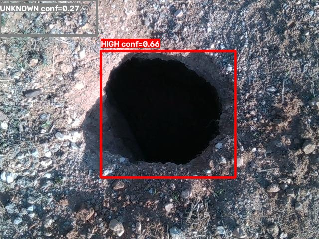
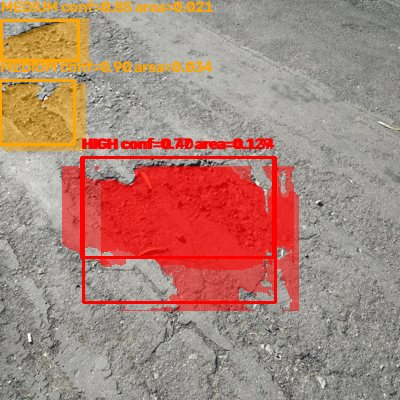
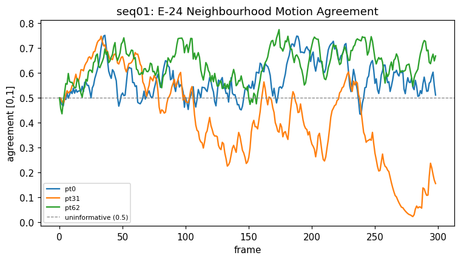

I build applied AI projects end to end: training vision models, wiring up LLM agents, and automating the boring parts with scheduled pipelines. I write down what doesn't work yet, because a number I can't defend isn't worth putting in a README. I'm looking for Data, AI and ML internships and entry-level roles.
Road departments need to know which potholes to fix first, but a citizen's photo only says "there's a pothole", not how bad it is. This pipeline takes one ordinary road photo and rates each pothole LOW, MEDIUM or HIGH, without LiDAR or a calibrated camera.
YOLOv8n detects potholes. I trained it on 1,986 images merged from several datasets.
YOLOv8n-seg outlines each pothole, and Depth-Anything-V2 estimates relative depth inside the crop.
A rule-based severity engine, modelled on the ASTM D6433 pavement standard, combines size and depth. Depth can raise a rating but never lower it, and if there's no mask the result is UNKNOWN rather than a guess.


Real pipeline output. Left: a deep pothole rated HIGH; a second weak detection got no mask, so it's reported UNKNOWN. Right: masks coloured by severity. Both photos come from the training datasets, so they show the output format, not test accuracy.
Stage
Evaluation
mAP@50
mAP@50:95
Detection
5-fold cross-validation
0.731 ± 0.010
0.432 ± 0.009
Segmentation (mask)
PothRGBD, 100-image test split
0.908
0.592
An earlier evaluation showed 0.95 mAP@50, but the test photos had leaked into the training data. I struck it out of the README and report the cross-validated 0.73 instead. Depth correlates with sensor depth at r = −0.73, so it's used as a relative signal only.
The STIR challenge asks teams to track points on deforming tissue through laparoscopic surgery video. The tissue is wet and shiny, instruments block the view, and the 2026 rules require strict frame-by-frame inference within a latency budget.
I built a Dockerized inference harness for mono and stereo trackers that writes per-frame predictions and latency in the official format.
I benchmarked existing trackers locally with the official metrics code, to choose a base for my own model.
Reading the evaluation harness closely showed that the 2026 protocol requires per-frame streaming, which rules out trackers that look ahead at future frames.
Tracker
AJ
ATA
p95 latency
DenseTrack2D
0.659
0.743
485 ms
MFT-IQ (RoMa flow)
0.663
0.743
13,028 ms
RoMa + LT fallback
0.638
0.714
1,274 ms
CoTracker3 offline
0.599
0.686
23 ms
Local benchmark on 4 dev sequences, not the official leaderboard. The challenge's own reference tracker scored about 0.40 in this setup against 0.78 officially, so these numbers only compare trackers with each other.

A diagnostic from my tracker work: how well each point's motion agrees with its neighbours over 300 frames. Point 31's agreement falls toward zero, a sign it no longer moves with the tissue around it.
When JEE and NEET students ask AI for answers, they skip the part that builds understanding. CogAIt replies with questions instead, and raises the level of help one step at a time only when a student is stuck.
Every reply goes through a validator that rejects final values, worked solutions and "yes, that's correct". It regenerates up to 3 times, then falls back to a safe question.
Eight small agent services handle the rest: session analysis, practice sets, long-term reports, cohort views for lecturers and a judge that audits outputs.
Each answer gets a Cognitive Independence Score, so a lecturer can see which students lean on the AI, per topic.
Working prototype, not yet piloted with an institution. The README lists which guardrails are enforced and which aren't yet.
A pipeline that runs entirely on GitHub Actions cron jobs. Three times a day it writes a short script with an LLM, renders a 1080×1920 video and uploads it to YouTube, Instagram and Facebook, timed for audiences in Asia, Europe and the US. Every Sunday it pulls its own analytics and generates ideas for the next week.
An attendance and wage app for construction sites. It turns daily attendance, overtime, advances and holidays into monthly pay reports as PDF or Excel.
A free compound interest and SIP calculator for India, with inflation and tax adjustments and FD vs. mutual fund comparison. Available in Hindi and English.